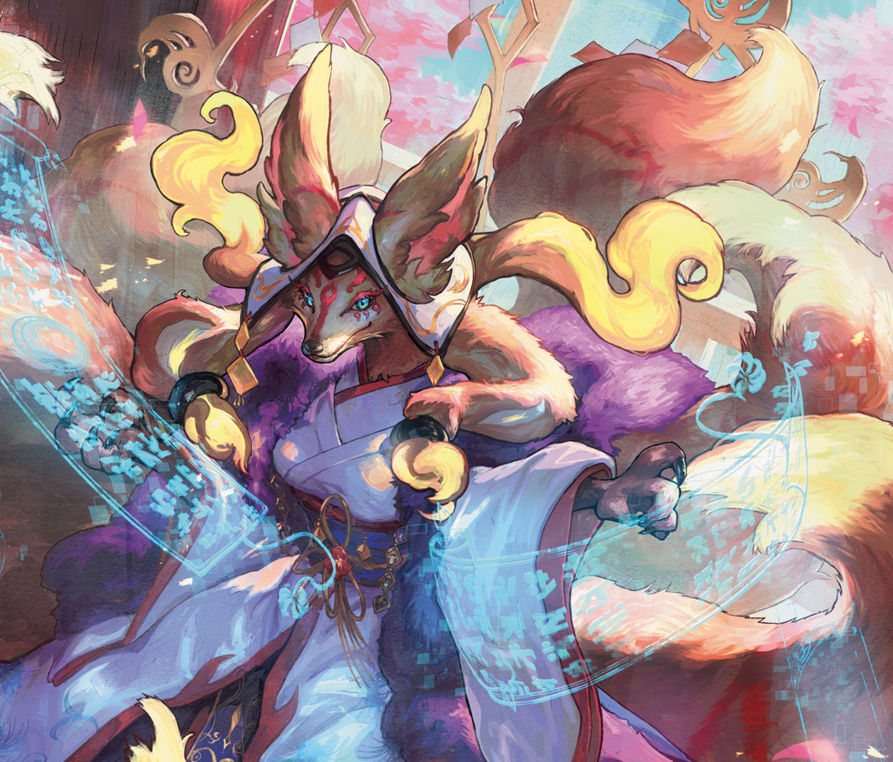
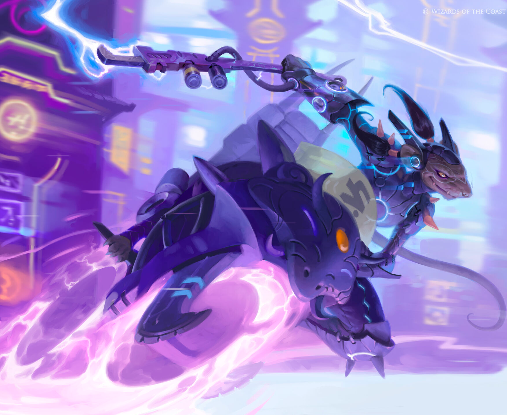
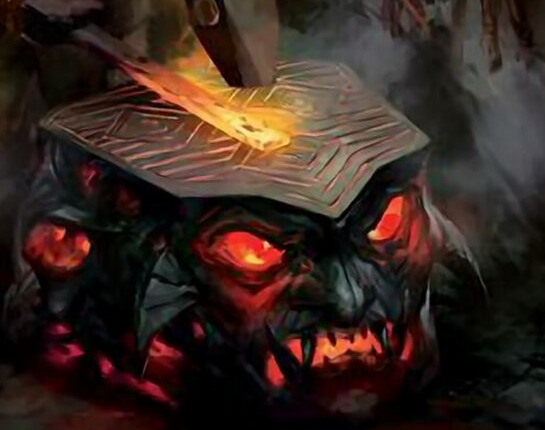
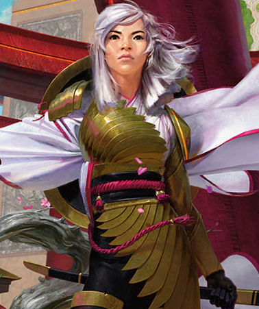

This website is awesome
This website has some subtext that goes here under the main title. It's a different font and the color is lower contrast.
The Spicy Meatballs -- Fresh Outta the Oven

Orzhov Auras has really taken off with the release of Neon Dynasty hotshot: Light-Paws, Emperor's Voice!

Brewers have been trying to break Parhelion II (from War of the Spark) since its release -- has Greasefang, Okiba Boss brought the deck to the forefront of the Pioneer battleground?

Jund Sacrifice decks in Pioneer have been built in two ways -- focusing on food and the "cat combo" formed by Cauldron Familiar and Witch's Oven, or by cashing in on the power of Collected Company with more value creatures and sacrifice outlets. A new build has come to town, though -- artifact tutoring with Karn and the new card from Neon Dynasty: Oni-Cult Anvil!

Azorius Control decks have been around since the very announcement of the Pioneer format but have changed significantly over time. Do Wandering Emperor and March of Otherworldly Light have what it takes to put this deck back on top?
[Mide Lane]
[Bot Lane]